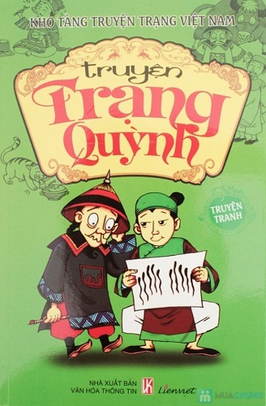
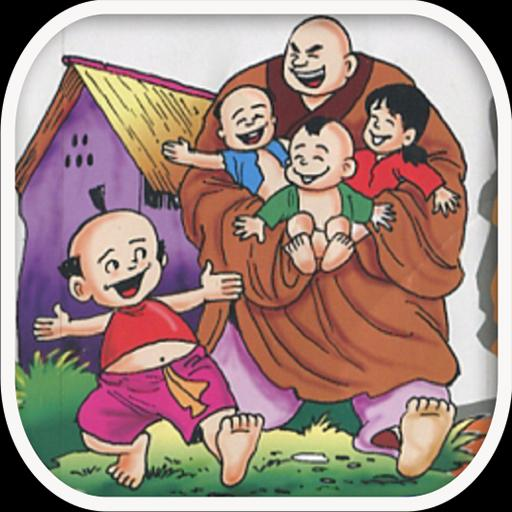
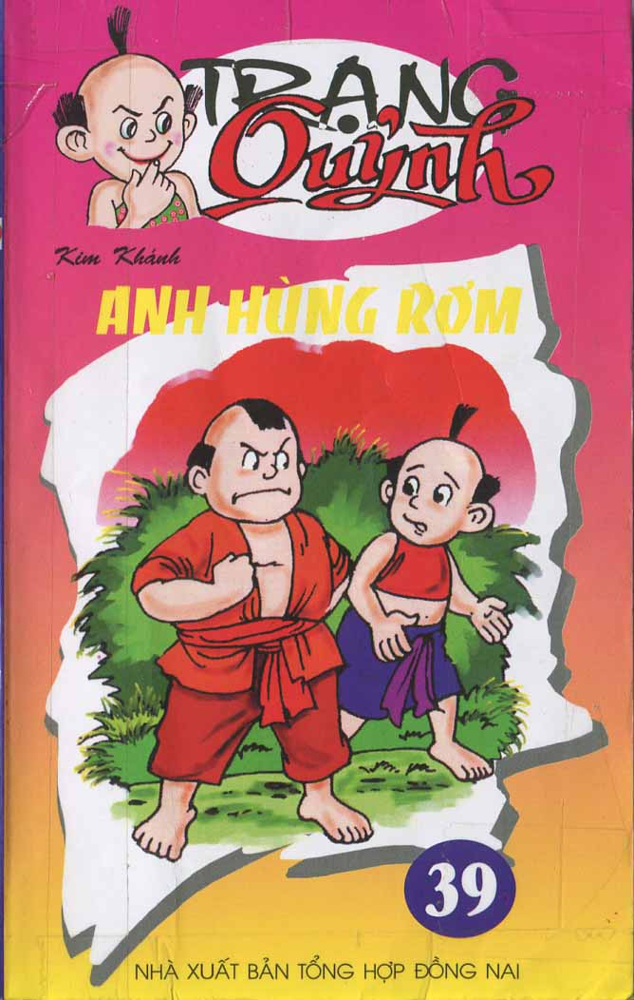
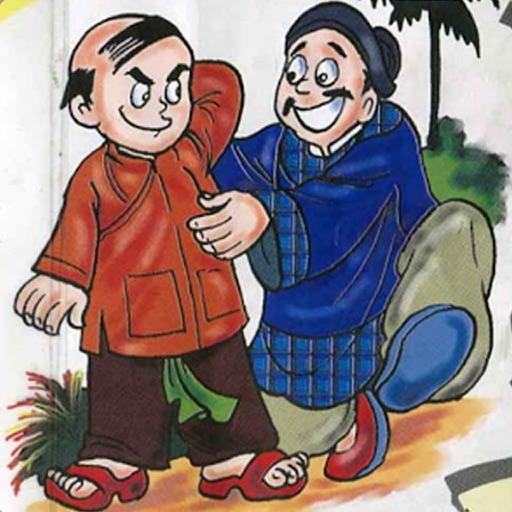

Trạng chết chúa cũng băng hà
Từ bận ấy, chúa có bụng ghét Quỳnh. Được mười hôm, chúa đòi Quỳnh vào thị yến, định đánh thuốc độc cho chết, Quỳnh biết chúa căm về mấy chuyện trước, lần này đòi vào thị yến, chắc là có chuyện. Lúc đi dặn vợ con rằng: – Hôm nay ta vào hầu yến Chúa, lành ít, dữ nhiều. Ta có mệnh hệ nào, thì không được phát tang ngay, cứ phải để ta vào võng, cắt hai đứa quạt hầu, rồi gọi nhà trò về hát, đợi bao giờ phủ chúa phát tang thì ở ngoài hãy phát tang. Dặn xong, lên võng đi. Quỳnh vào đến cung, đã thấy chúa ngồi đấy rồi. Chúa bảo: – Lâu nay không thấy mặt, lòng ta khát khao lắm. Vừa rồi, có người tiến hải vị, ta nhớ đến ngươi, đòi vào ăn yến, người không được từ. Quỳnh biết chúa thù về cây cải hôm nọ, không ăn không được. Vừa nếm một miếng thì chúa hỏi: – Bao giờ Quỳnh chết? Quỳnh thưa: – Bao giờ chúa băng hà thì Quỳnh cũng chết? Ăn xong, Quỳnh thấy trong người khang khác, cáo xin về. Vừa về đến nhà thì tắt hơi. Vợ con cứ theo lời Quỳnh dặn mà làm. Chúa sai người dò xem Quỳnh có việc gì không, thấy Quỳnh đương nằm võng nghe nhà trò hát, mà người nhà thì đi lại vui vẻ như thường, về tâu với chúa. Chúa liền đòi đầu bếp lên hỏi xem đánh thuốc thế nào mà Quỳnh không việc gì. Chúa ăn thử, được một chốc thì chúa lăn ra chết. Nhà Quỳnh nghe thấy trong dinh chúa phát tang thì ở nhà cũng phát tang. Chúa và Trạng đưa ma một ngày. Thế mới biết Quỳnh chết đến cổ còn lừa được chúa mới nghe. Người đời sau có thơ rằng: “Trạng chết chúa cũng băng hà Dưa gang đỏ đít thì cà đỏ trôn”.
Mừng chúa thắng trận
Chúa Trịnh sau khi tuần du một vùng biên ải miền tây, trở về kinh sư huênh hoang khoe rằng “Quân nó” vừa thua to, và bị quân nhà chúa nửa đêm bất thần phá lũy đánh tốc vào… Phụ họa với nhà chúa, bọn quan nội và lũ nịnh thần đua nhau dâng biểu chúc tụng. Nhân cơ hội này, Quỳnh cũng làm một bài thơ gửi mừng chúa. Thơ rằng: Nửa đêm giờ tí trống canh ba Thoắt tiến lên thành phá lũy ra Một tướng thẳng vào trong cửa hiểm Hai quân đứng núp chực bên hà Quân ta đổ lộn cùng quân nó Nước nó giao hoà với nước ta Đánh đoạn rút về lau khí giới Tìm nơi vũ khố để can qua. Nghe nói mới đọc qua lần đầu, chúa đắc ý. Nhưng xem kỹ lại, ngẫm nghĩ, nhà chúa bỗng nhăn mặt nói với thị thần: “Trạng lại dùng “Cái ấy” để lõm ta rồi, thế mà tụi bây không đánh hơi thấy à? “.
Cây nhà lá vườn
Quỳnh nhiều lần dùng trí thông minh, tài đối đáp để trêu chọc chúa Trịnh, nên trước chúa quý trọng bao nhiêu thì sau lại ghét bấy nhiêu. Chúa càng ghét, Quỳnh càng trêu tợn. Một lần, chúa sai lính tới kéo đổ nhà Quỳnh. Thấy lính đến Quỳnh bảo: – Chúa sai các anh đến kéo đổ nhà ta, các anh cứ làm, nhưng không được reo, cười, ai mà reo cười ta cắt lưỡi. Ở đời, hễ kéo nặng thì phải reo hò, không dô ta, hò khoan sao mà kéo nổi? Bọn lính đành chịu thua về trình báo lại. Lần khác chúa sai bọn lính đến ỉa vào vườn nhà Quỳnh, Quỳnh thản nhiên cầm dao ra bảo: – Chúa sai các anh đến ỉa thì cứ ỉa nhưng ta cấm đái. Thằng nào đái thì dao đây, ta cắt…. Ngay! Ỉa ai không đái bao giờ? Bọn lính lại phải về tâu lại. Chúa truyền cho chúng mang gáo dừa theo và đái vào đó. Quỳnh đành chịu thua nhưng vẫn nghĩ cách chơi lại chúa. Một tháng sau, Quỳnh ra chợ, thấy người ta bán cải tốt, liền mua thật nhiều về, mang lên biếu chúa. Chúa thấy cải ngon, sai đầu bếp nấu canh, và quên chuyện cũ liền hỏi Quỳnh cải đâu mà ngon vậy. Quỳnh thưa ngay: – Dạ, đó là cải nhà trồng. Trước nó không tốt lắm nhưng từ khi chúa sai lính “Bón phân” vườn nhà thần, nên nó tốt tươi như vật. Cây nhà lá vườn thôi, thần mới dám dâng cho chúa xơi!
Hút chết vì quả Đào
Quỳnh rất cậy tài, đùa cả, không từ ai. Một hôm, túc trực trong cung, có người đem dâng vua một mâm đào, gọi là “đào trường thọ”. Quỳnh thủng thỉnh lại gần, lấy một quả, ngồi ăn, giữa đông đủ mặt vua quan, mà làm như không thấy ai cả. Vua quở, giao xuống cho các quan nghị tội. Các quan chiếu theo luật “Mạn quân” tâu nghị trảm. Quỳnh quỳ xuống tâu rằng: – Đình thần nghị tội hạ thần như vậy, thật là đúng luật, không oan, song xin Hoàng thượng rộng dung cho hạ thần được nói vài lời rồi chết cho thỏa ! Vua phán: – Ừ, muốn nói gì cho nói! – Muôn tâu bệ hạ, hạ thần có bụng tham sinh, sợ số chết non thấy quả gọi là quả “Trường thọ” thèm quá, tưởng ăn vào được sống lâu như Bành Tổ, để được thờ nhà vua cho tận trung. Không ngờ nuốt chưa khỏi mồm mà chết đã đến cổ! Hạ thần trộm nghĩ nên đặt tên quả ấy là quả “đoản thọ” thì phải hơn, và xin nhà vua trị tội đứa dâng đào để trừ kẻ xu nịnh. Vua nghe Quỳnh tâu phải, bật cười tha tội cho.
Bà chúa mắc lỡm
Một bà Chúa nhan sắc mặn mà nhưng tính kiêu ngạo, hễ đi ra chơi phố phường thấy ai trái ý là sai lính bắt liền. Một lần, Quỳnh lững thững đi chơi, gặp kiệu Chúa. Gần đấy có cái ao bèo, Quỳnh vội vàng chạy xuống cầu ao đá nước chơi. Chúa biết Quỳnh, thấy chơi lẩn thẩn như thế mới hỏi: – Ông làm gì đó? Quỳnh ngẩn lên thưa: – Tôi ở nhà buồn quá, ra “đá bèo” chơi! Bà Chúa đỏ mặt tía tai, tức lắm nhưng chẳng dám nói gì.